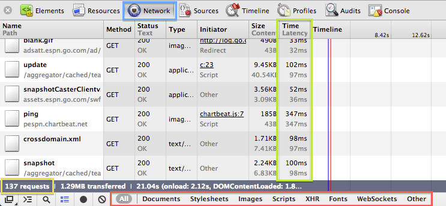
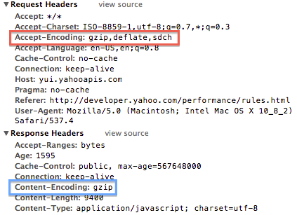

Front End Web Efficiency
The Top Ten
Ted VanToll
About Me
- I'm a web developer at Liquid Web.
- I have twin boys and I like to use their pictures in my slides.


The Front End
Why should you care about performance?
Where to start?

Making a site fast may seem complex.

Practicality
- A couple small changes can go a long way.
- It's important to focus on the things that really matter.
There is a lot of bad information out there. These things are very rarely a bottleneck:
- Sheer amount of JavaScript present
- JavaScript performance
- CSS
The Practical Top 10 List
Where does the list come from?
Lots of bad 3G experiences.

Let's Get Started
#1) Reduce HTTP Requests
The majority of loading time is spent downloading the various components that make up a web page - images, CSS, JavaScript, etc.

RTTs > Size
Download Times
Compare that to download numbers.
Page Size
According to the HTTP archive the average web page size in 2011 was 965 kb (Source).
Connections
Moral of the Story
Lots of small downloads = slow

How do you reduce HTTP requests?
Combine Things!

JavaScript
There are a plethora of options. Incorporate one into your workflow (source control hook, build script, release, etc...)
CSS
Images
- Use CSS sprites. (Example from yahoo.com)
- Use data URIs. (Example - magnifying glass on Google mobile) to inline images.
- Use icon fonts to avoid images.
Images Continued
Don't use images to make things that can easily be made in CSS. If you want a rainbow circular ball with shadows, make it with CSS.
Don't worry, old IE users don't need rainbow balls.
How to Measure
Chrome Dev Tools' network tab. You can see the number of requests, filter by request type, as well as view download and latency times.
That was a long #1.
Questions?
#2) Implement Caching
- Browsers use a cache to reduce the number and size of HTTP requests when loading web pages. You probably know this.
- Doing it right is not hard, but has the potential to ruin a user's experience without you knowing about it.
- Caching is immensely important for frequently revisited sites. Yahoo found that 75% - 85% of their pages views were from users with a primed cache (Source).
Browsers and Caching
- Browsers look for the
Expires,Cache-Control,Last-Modified, andETagHTTP headers returned on requested resources to determine how to cache them. - Browsers have algorithms for handling resources that have none of these headers present. You don't want this. Set the headers.
Expires & Cache-Control
Specify how long the browser can use the cached resource without checking to see if a new version is available (Source).
The only difference between the two is syntax options; it's redundant to specify both. Set a far future expiry using one of these headers on everything not dynamic.
Expires & Cache-Control - Setting
Using Apache? Use the .htaccess from the HTML5 Boilerplate to get useful snippets (full source). For example:
# CSS and JavaScript ExpiresByType text/css "access plus 1 year" ExpiresByType application/javascript "access plus 1 year"
Not using Apache? There are examples for other server configurations here.
Before you get started...

HTTP Headers - Strong
ExpiresandCache-Controlare strong headers, meaning, once the browser has downloaded a resource it will not issue any GET requests to check for newer versions until the resource has expired.- What happens when you want users to get an updated copy of a resource?
Bust the Cache

Cache Busting
Browsers cache based off full URL paths. Therefore, you can change the path whenever you want to bust the cache. This is easily done server side.
For example:
<!-- Inject a version number using a server-side templating language of your choice --> <script src="/path/to/foo.js?version=1.2.3"></script> <script src="/path/to/1.2.3/foo.js"></script>
Last-Modified
- Make sure the
Last-Modifiedheader is being included on all resources (most web servers take care of this automatically). - The browser will use this header when a page is refreshed by doing a conditional GET on the resource. The resource will not need to be download if it has not been modified (in which a 304 response will be returned).
Questions?
#3) Optimize Images
- Images make up the largest chunk of most web pages (Source). Therefore, it's important to reduce their footprint as much as possible.
- How?
Compress!
Compression
There are numerous lossless compress algorithms you can simply run against your code base. There are Windows, OS X, Linux, and free web based optimizers out there, but here are a few examples:
- OptiPNG
- JPEGClub
- ImageOptim (OS X app)
Tip #1
Don't scale images in HTML / CSS.
<img src="image1.jpg" height="100" width="100" />
<img src="image2.jpg" />
<style>
[src='image2.jpg'] { height: 100px; width: 100px; }
</style>
For both images above a 100 x 100 pixel image will be displayed on the screen, but for both the full size image will be downloaded from the server. Resize the image on the server instead.
Tip #2
- Images that do not display on the screen are still downloaded by the browser. This includes images hidden via
display: none,visibility: hidden, as well as images simply off the screen. - Images provided as CSS values such as
background-imagewill not be downloaded until they're needed.
#4) Optimize 3rd Party Dependencies
- 3rd party means that you are hitting a server you do not have control over for resource(s).
- Social media buttons and ads are the common examples.
Defer Loading
Loading of 3rd party scripts should always be deferred until after the DOM has loaded (i.e. after the DOMContentLoaded event has fired).
<-- Simple download of a script from Twitter, WHAT COULD GO WRONG? --> <script src="//platform.twitter.com/widgets.js" ></script>
THE TWITTER IS DOWN!

Blocking Scripts
Browsers block for JavaScript execution because it could potentially affect the HTML parser (think document.write). Fix? Use the defer and async attributes.
<script src="//platform.twitter.com/widgets.js" async ></script>
defer and async
defer: Script execution will be delayed until HTML parsing is complete.
async: Script execution will occur whenever the resource becomes available, regardless of whether HTML parsing is available.
Social Buttons
- Including the Facebook, Twitter, and Google Plus buttons costs 19 HTTP requests and 246.7K in bandwidth (Source).
- Think about whether you really need them.
#5) Gzip
- Gzip is a compression algorithm understood by browsers and web servers.
- Should be used on HTML, CSS, and JS resources. Do not use on images or other binary formats.
- Most useful on large files; it can actually increase the size of small files (Source).
Gzip = Big Deal
jQuery 1.8.2 goes from 93K --> 32K after GZip compression. Gzip is a big deal.
Gzip: How to use it?
Red: Browser tells web server is accepts gzipped resources.
Blue: Web server returns a gzip encoded JavaScript resource.
Gzip Continued
Ensure your web server is setting the Content-Encoding header appropriately.
HTML5 boilerplate's .htaccess includes the configuration for Apache servers.
#6) Use a CDN
- CDN = Content Delivery Network
- Collection of web servers distibuted across multiple locations to deliver content more efficiently to users (Source).
- Geographically closer servers = lower download times
CDN
- A good CDN will select a server to deliver content from based on network proximity.
- Because the content is on another domain it is not subject to the connections per hostname limit.
Examples
Google Maps uses multiple domains to workaround the browser's connection per hostname limit.

When Yahoo moved static content from application servers to a CDN they saw end-user response time improvements of 20% or more (Source).
#7) Placement of Resources

CSS on Top
- Makes pages appear to load faster because it allows the page to load progressively (Source).
- Putting stylesheets near the bottom of the document can prevent progressive rendering of HTML in many browsers (they block to avoid having to do a repaint of the page when styling changes).
- If the browser doesn't block, the user will often get a FOUC (Flash Of Unstyled Content) since the page will be repainted after the HTML has been rendered.
JavaScript on the Bottom
- Browsers block on script loading. To ensure the user can see content as soon as possible JavaScript should not be executed until the page's HTML has been parsed.
- This can also be accomplished by using the
asyncanddeferattributes. However, putting scripts at the bottom handles all browsers, not just ones that support async and defer.
Make CSS and JS External
- Inline
styleandscriptblocks cannot be cached, external files can.
Ultra Optimization
- Put all CSS and JS inline on first request to avoid extra HTTP requests to get the external files. Then, preload the external files for subsequent requests. Use a cookie so server-side code knows whether to include the content inline or external.
- You'll likely only need if you're developing a high traffic mobile landing page (e.g. http://www.google.com/m/gp or http://m.bing.com/).
- Read more about this technique (it gets totally cooler with
localStorage).
#8) The DOM is a Mess

Which is faster? By how much?
Option 1:
var foo = document.getElementById('foo');
for (var i = 0; i < 1000; i++) {
foo.innerHTML += 'a';
}
Option 2:
var foo = document.getElementById('foo');
var html = '';
for (var i = 0; i < 1000; i++) {
html += 'a';
}
foo.innerHTML = html;

{kind=link}
Why is the DOM Slow?
The browser has to do A LOT whenever the DOM is changed.
- Recompute styles based on parent-child relationships.
- Recompute dimensions.
- Notify browser extensions and client scripts of the DOM change.
- Update JavaScript variables that are handles to DOM nodes.
- More...
What to do?
- Modify the DOM as little as possible.
- Try to make big changes "offline" (aka off the DOM).
- Don't treat the DOM as storage, just use JavaScript variables.
#9) Delegate

Example
Turn all table cells red on hover.
var cells = document.getElementsByTagName('td');
for (var i = 0; i < cells.length; i++) {
cells[i].addEventListener('mouseover', function(event) {
event.target.style.backgroundColor = 'red';
}, false);
}
//With jQuery
$('td').bind('mouseover', function() {
$(this).css('backgroundColor', 'red');
});
One event per DOM node. More events firing leads to a slower user experience if the event is doing something non-trivial. More events attached leads to more memory consumption.
Better
var tables = document.getElementsByTagName('table');
for (var i = 0; i < tables.length; i++) {
tables[i].addEventListener('mouseover', function(event) {
if (event.target.nodeName == 'TD') {
event.target.style.backgroundColor = 'red';
}
}, false);
}
//Or with jQuery
$('table').on('td', 'mouseover', function() {
$(this).css('backgroundColor', 'red');
});
Less events means less memory consumption and a faster user experience.
#10) Honorable Mentions
- Don't set cookies on domains static resources are sent from (useless header will be sent on every request).
- Don't have an enormous DOM (longer to download, more strain on the browser to render and manage).
- Don't have 404's, duh. Avoid redirects as much as possible.
- Preload stuff you know the user will need.
Questions?
Make Users Happy